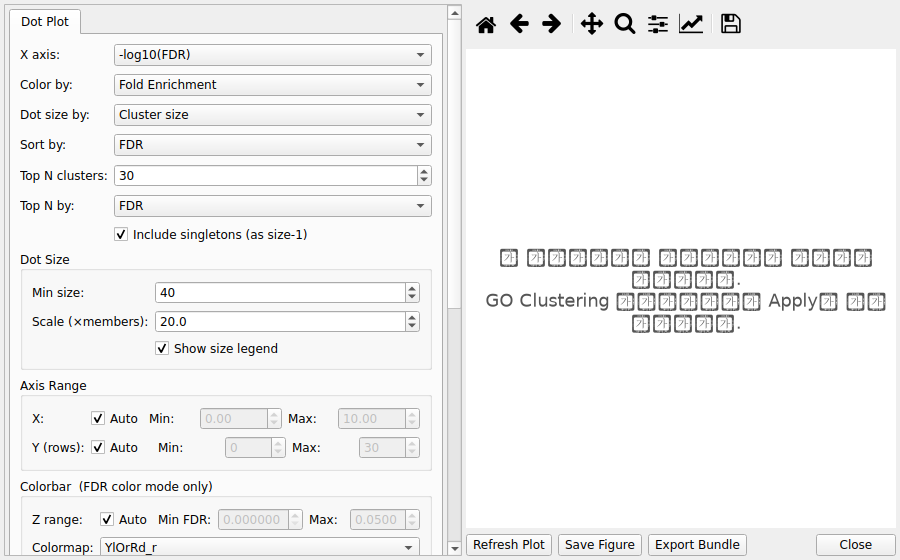
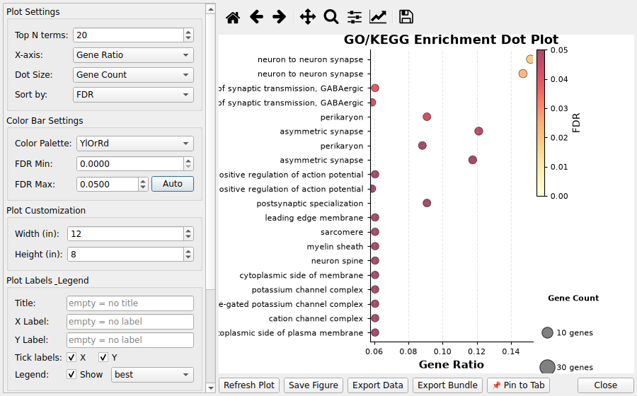
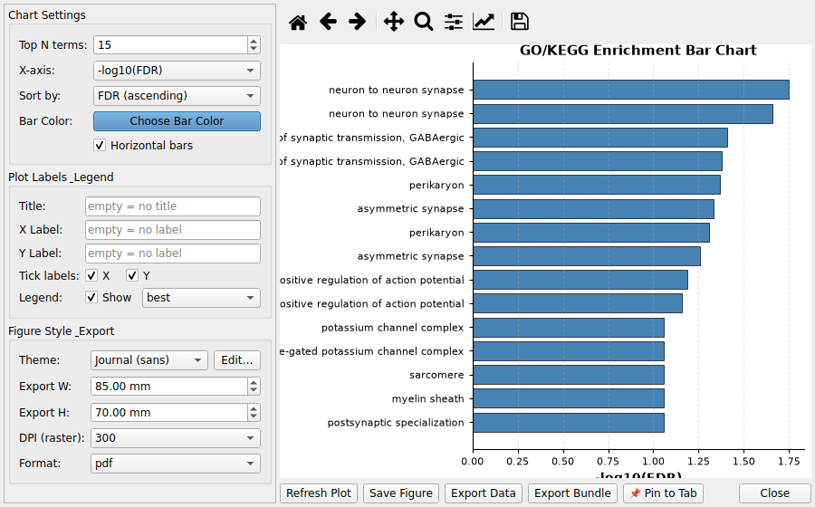
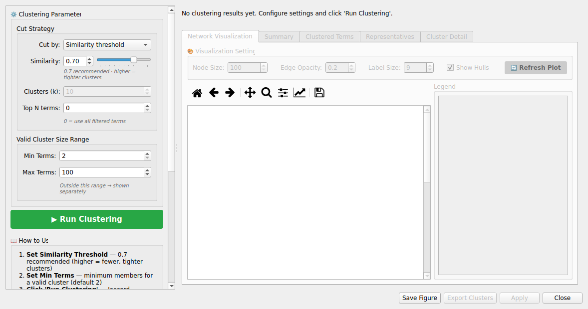

5. GO/KEGG Analysis¶
5.1 Overview¶
CMG-SeqViewer provides specialized tools for Gene Ontology (GO) and KEGG pathway enrichment analysis.
5.2 Loading GO/KEGG Data¶
Load enrichment results via File → Open GO/KEGG Results... (Ctrl+G). The loader recognizes
common clusterProfiler/gseapy/Enrichr header conventions (GO ID, KEGG.Pathway, p.adjust,
core_enrichment, and similar variants) automatically. If a file's headers aren't recognized —
e.g. output from a different enrichment tool — a Column Mapping dialog opens automatically so
you can map the file's columns (term/description, gene count, FDR) to the required fields by hand
instead of the load silently failing.
5.3 Filtering GO/KEGG Results¶
Filter Panel provides specialized options:
-
FDR Threshold: Maximum adjusted p-value (default: 0.05)
-
Ontology: BP (Biological Process), MF (Molecular Function), CC (Cellular Component), KEGG, or All
-
Gene Set: UP/DOWN/TOTAL (indicates which DEG group was analyzed)
Note: "Gene Set" is different from "Regulation" - it shows which DEG group was used for GO analysis.
5.4 GO Term Clustering¶
Jaccard-similarity hierarchical clustering merges redundant GO terms:
-
Filter the GO/KEGG dataset (e.g., FDR < 1e-5, BP, UP)
-
Select Analysis → Cluster GO Terms
-
Choose Cut by — only the relevant control is enabled:
-
Similarity threshold (default) — data-driven; keeps all clusters + singletons: Similarity spinbox/slider 0.0–1.0 (default 0.7 — higher is stricter, fewer clusters)
-
Number of clusters (k) — cuts the tree at exactly k (2–100) clusters (cutree); good for compact summaries
-
Top N terms (optional) — 0 uses all filtered terms; N > 0 pre-selects the top N terms by FDR before clustering — e.g. combine 50 + "Number of clusters (k)" for an easy-to-read compact summary. Changing this requires Run Clustering again (the tree must be recomputed)
-
Min / Max Terms (Valid Cluster Size Range) — clusters outside this range are flagged separately (default Min 2, Max 100)
-
Run Run Clustering and inspect the 5 result tabs:

-
Network Visualization: per-cluster Jaccard network grid; click a cell to zoom in the Cluster Detail tab
-
Summary: total terms, valid cluster count, singleton count
-
Clustered Terms: every term gets a C001/C002… cluster ID
-
Representatives: representative term (lowest FDR) per valid cluster
-
Cluster Detail: enlarged single-Jaccard-network view of the selected cluster
-
Live threshold re-cutting: after Run, changing Similarity or k reclassifies/redraws immediately without full recomputation (the hierarchy tree is cached), so you can compare thresholds quickly
-
Click Apply to create the Clustered tab (with cluster ID column)
Figure Style & Export¶
Click the 🎨 Figure Style & Export... button in the left panel to open a small popup dialog for theme/colors and export size·DPI·format (opened as a separate window to save panel space). Style changes apply immediately to the Network Visualization grid.
Algorithm summary¶
-
Jaccard similarity: shared genes of two terms ÷ union genes
-
Hierarchical clustering (average linkage); Similarity mode uses a distance threshold = 1 − Similarity Threshold; k mode cuts the tree at exactly k clusters
-
Clusters below Min Terms are classified as singletons (no cluster ID)
-
Representative term = lowest-FDR term in each cluster
-
Cluster IDs: C001, C002… format (0-padded, string-sortable)
Post-clustering visualization¶
-
With the Clustered tab active, run Visualization → Cluster Dot Plot
-
Each dot = cluster representative term; dot size = member count, color = FDR
5.5 GO/KEGG Visualization¶
Dot Plot:¶

-
Select Visualization → GO/KEGG Dot Plot
-
Dot size: gene ratio, gene count, or fixed
-
Dot color: FDR, p-value, or q-value
-
Shows top N enriched terms
Bar Chart:¶

-
Select Visualization → GO/KEGG Bar Chart
-
Shows -log10(FDR) for top terms
-
Color-coded by ontology
Cluster Dot Plot:¶

-
Select Visualization → GO/KEGG Cluster Dot Plot
-
Requires Clustered tab (run GO Clustering first)
-
One dot per cluster representative term
-
Dot size = cluster member count, color = FDR
-
X axis: -log10(FDR), Gene Ratio, or Fold Enrichment
5.6 End-to-end workflow example (pipeline results)¶
A complete round trip with pipeline-generated results, from import to a clustered dot plot.
-
Import a pipeline result: File → Load Data... →
final_go_result.xlsx(multi-sheet:DOWN_BP,TOTAL_BP,KEGG_DOWN, ...). The loader standardizes columns and derivesdirection/ontology/_gene_setexactly like in-app results — the same standard column order. -
Filter (Filter Panel): FDR < 0.05, Ontology = BP, Gene Set = DOWN (the filter matches the pipeline sheet labels
DOWN_BPetc.). -
Cluster (Analysis → Cluster GO Terms): keep the defaults (Similarity threshold 0.7, Min/Max 2–100) and click Run Clustering, then Apply.
-
Visualize — the four views share the same registered dataset:
-
Visualization → GO/KEGG Dot Plot —
- Visualization → GO/KEGG Bar Chart —
- Visualization → GO/KEGG Cluster Dot Plot (requires the Clustered tab) —
-
The Network Visualization tab inside the clustering dialog —
-
Export: Export the active tab to Excel/CSV/Parquet or save the figure (PNG/SVG/PDF) from the plot panels.
Screenshot note: the figures above are rendered by the app on demo data. For release documentation, replace them with captures from the deployed (Windows/macOS) build — keep the same file names under
docs/user/help/assets/so the markdown references stay valid.
5.7 Common Workflows¶
Basic Analysis:
-
Load GO data
-
Filter (FDR < 0.05, BP, UP)
-
Create Dot Plot
-
Export results
Clustered Analysis:
-
Load GO data
-
Filter (FDR < 1e-5, BP)
-
Cluster GO Terms
-
Apply clustering
-
Create Cluster Dot Plot
-
Export clustered results
5.8 GO Term List Filtering¶
Filter a GO/KEGG dataset to a specific set of GO term IDs — useful when you already know which terms you want to compare across datasets.
How to use¶
-
Make sure a GO/KEGG dataset tab is active
-
Open the Filter Panel and select the Gene List tab
-
Enter GO term IDs (one per line) — e.g.:
``` GO:0006915 GO:0007049 GO:0008150
Click Apply Filter**
A new tab appears: "Filtered: GO Term List (N terms)"*
Notes
GO term IDs must follow the GO:XXXXXXX` or KEGG:xxxXXXXX` format
If the active dataset is not a GO/KEGG type, or if non-GO IDs are entered into
Gene Symbol mode, the app shows a warning and aborts
The filter matches against the term_id` / go_id` column
of the GO dataset
Filtered results can be passed directly to the GO Term Comparison workflow
Best Practices
Filter to meaningful FDR before clustering (< 1e-5 recommended)
Cluster each ontology (BP, MF, CC) separately
Start with 0.3 similarity threshold, increase for fewer clusters
Focus on representative terms for biological interpretation
Re-filter Filtered tabs to narrow down results further
See also: User Guide · FAQ · 6.3 Engine modes